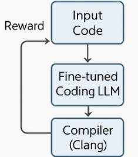

Software vulnerabilities remain a critical threat to modern systems, with existing detection tools often suffering from limited generalization, inconsistent coverage, and high false-positive rates. This proposal introduces a compiler-verified reinforcement learning framework for automated vulnerability detection in source code. Our approach leverages compiler feedback—including error diagnostics, static analyzers, and sanitizers—as dynamic reward signals to guide model improvement, moving beyond static benchmark-based evaluation. Unlike traditional compiler-based methods that require exhaustively compiling large codebases, our model-based approach learns vulnerability patterns directly, enabling faster and more scalable detection. The proposed system integrates reinforcement learning with parameter-efficient fine-tuning to adapt across programming languages and Common Weakness Enumeration (CWE) categories. We outline our experimental design, resource plan, and evaluation strategy to demonstrate how reinforcement learning, guided by compiler and analyzer signals, can yield a more accurate and computationally efficient solution for secure software development.

Source code samples are fed into a fine-tuned coder model that predict vulnerabilities. The model receives feedback from the compiler and analyzers to improve its predictions.
What did you try to do? What problem did you try to solve? Articulate your objectives using absolutely no jargon.
We are creating a machine learning model that finds security vulnerabilities in code. Current tools miss many vulnerabilities. Our goal is to create a model that uses compiler feedback to detect unsafe code more accurately and quickly.
How is it done today, and what are the limits of current practice?
Today, developers use static analyzers and testing tools that look for known patterns. These tools are limited because they rely on set patterns and do not adapt to new kinds of vulnerabilities.
Who cares? If you are successful, what difference will it make?
If successful, the model could make software development safer and more efficient. Developers would spend less time dealing with code vulnerabilities and reduce the number of security issues.
What did you do exactly? How did you solve the problem? Why did you think it would be successful? Is anything new in your approach?
We train a reinforcement learning model that gets feedback from compilers and analyzers. Instead of relying only on test cases, the model learns from signals like whether code compiles, produces warnings, or has runtime errors. We believe the feedback will better allow the model to learn and generalize to other vulnerabilities. The novelty of our approach is combining compiler verification with reinforcement learning to create a self-improving machine learning model.
What problems did you anticipate? What problems did you encounter? Did the very first thing you tried work?
We expect issues such as the compiler tools giving too little feedback, and difficulty training on long pieces of code. To handle the issues, we use LlamaIndex to chunk the code into smaller pieces, and used multiple analyzers to provide more feedback. The initial attempts did not work well, but with some extra improvements, we were able to get the model working.
How did you measure success? What experiments were used? What were the results, both quantitative and qualitative? Did you succeed? Did you fail? Why?
We currently are measuring success with standard metrics like accuracy, precision, recall, and F1-score on the test dataset for ten epochs of fine-tuning the Qwen2.5-Coder-1.5B-Instruct model without reinforcement learning. The metrics are for the truncated and chunked code samples, and for Common Weakness Evaluation category or safe/unsafe. We plan to measure success using additional datasets like HumanEval and APPS+, and compare the performance of our model to existing tools.
| Experiment | Accuracy | Precision | Recall | F1-score |
|---|---|---|---|---|
| Truncated | 0.1948 | 0.2024 | 0.1948 | 0.1921 |
| Chunked | 0.2078 | 0.2445 | 0.2078 | 0.2246 |
| Truncated Binary | 0.3766 | 0.3889 | 0.3500 | 0.3684 |
| Chunked Binary | 0.4545 | 0.4706 | 0.4000 | 0.4324 |
How easily are your results able to be reproduced by others? Did your dataset or annotation affect other people's choice of research or development projects to undertake? Does your work have potential harm or risk to our society? What kinds? If so, how can you address them? What limitations does your model have? How can you extend your work for future research?